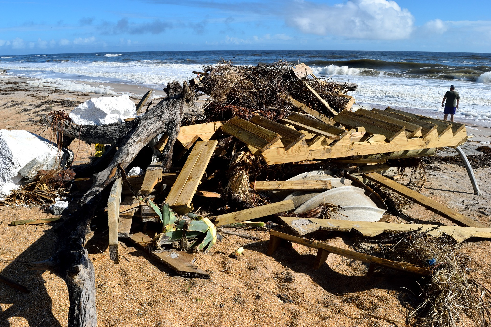
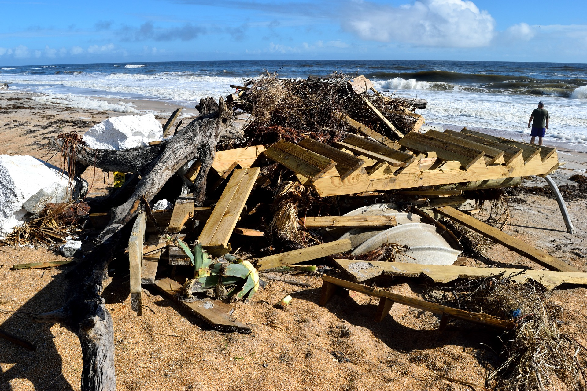

El reto
Perú genera 8 millones de toneladas de residuos al año, pero solo el 15% se recicla. Afectando a más de 800 especies marinas.
¿Te has percatado de que aproximadamente un 86% de los desechos sólidos presentes en nuestras playas son de naturaleza plástica? Además, es importante destacar que la gran parte de este plástico no se descompone en el entorno marino y tiene una durabilidad que puede extenderse a cientos o incluso miles de años.
En el ámbito nacional, se estima que hasta 8 millones de toneladas métricas de plástico ingresan anualmente a nuestros océanos. Dentro de esta cifra, se calcula que la contaminación plástica impacta a más de 800 especies marinas, ya sea a través de la ingestión, enredamiento o la degradación de sus hábitats naturales.
¿Qué hacemos para solucionarlo?
Activismo ambiental
Es esencial para promover la conciencia y la acción entre los jóvenes en relación con la protección del medio ambiente y el desarrollo sostenible.
Educación
Fomentar la conciencia sobre los desafíos ambientales actuales mediante charlas, talleres y eventos educativos para informar a los jóvenes sobre la importancia de cuidar el entorno y cómo pueden contribuir positivamente.
Tecnología
Nuestra organización está relacionada constantemente con STEM. Buscamos implementar proyectos tecnológicos para facilitar el acceso a la información y la creación de apps ambientales.